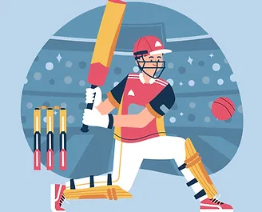

Creating a Cricket Game Simulation
Basic principles of object oriented programming were implemented to simulate a cricket tournament with multiple teams in a python IDE. Classes were created for each major concept in the simulation (e.g fields, players, teams, ball, umpire etc.), and the connecting logic was written to utilize each of these classes to achieve the simulation.